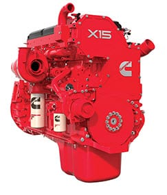

K200
For the driver the K200 defines interior space and comfort, delivering easy sleeper access and room to move with a near flat floor. Another feature, the optional Active Cab Entry system, provides peace of mind for applications requiring frequent cab entry and exit. Learn More...
T610
The T610 is one of the most aerodynamic and fuel efficient production trucks ever to carry the iconic Kenworth badge. Suitable for virtually any application, the T610 is made to measure for line haul, including maximum payload 26m B-Double configurations. Learn More...
T659
The distinctive sloping bonnet of the T659 gives excellent visibility and the drop front frame enables room for a large radiator providing exceptional cooling in the most arduous of conditions. The T659 is available in a 6×4, 8×4 and 8×6 configuration. Learn More...